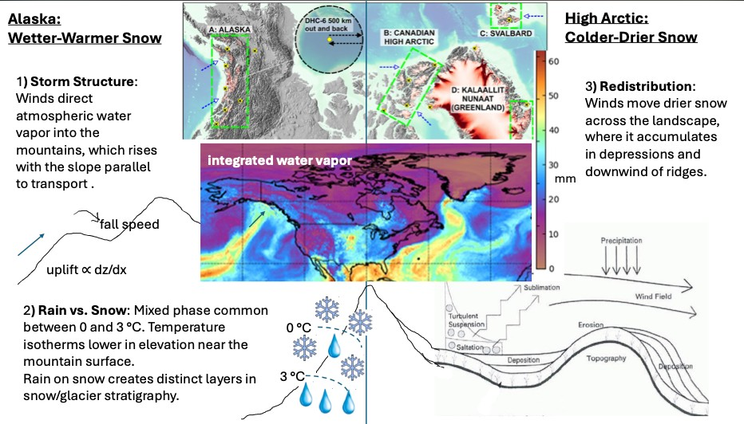

How Much Snow Falls on Glaciers? NASA's Snow4Flow Field Campaign
Studying glaciers is essential for better understanding water resources, sea level rise, and a changing climate. However, glaciers can be difficult to accurately measure and model.
To address this, we are partnering with hydrometeorologist Ethan Gutmann at the National Center of Atmospheric Research (NCAR) and the entire Snow4Flow team to determine how much snow falls on large glaciers across the Northern Hemisphere. In spring 2027, we'll be taking measurements on glaciers in Alaska and Svalbard, then moving on to glaciers in Greenland and Northern Canada in later years.
Additional information about the project can be found on the Snow4Flow website.
